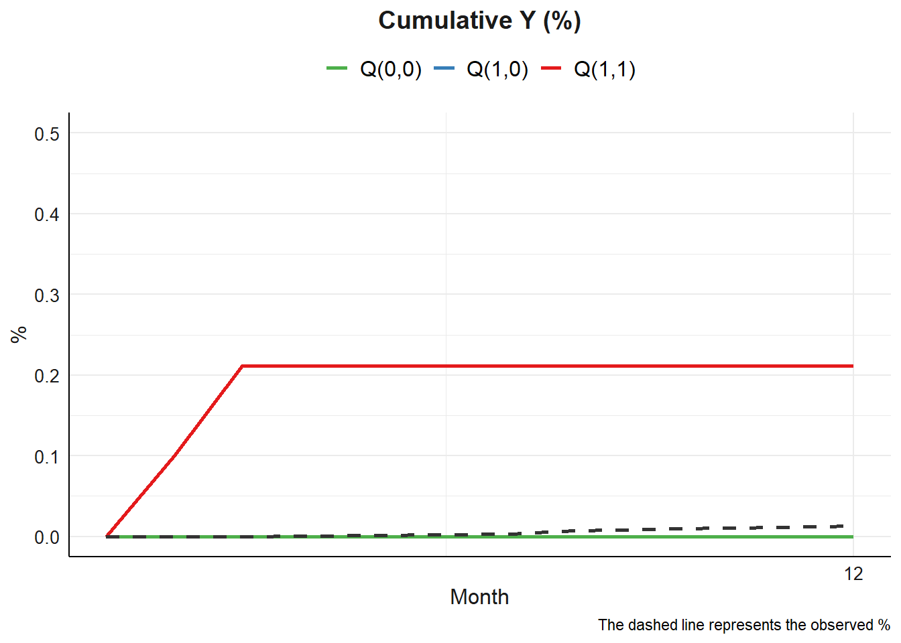
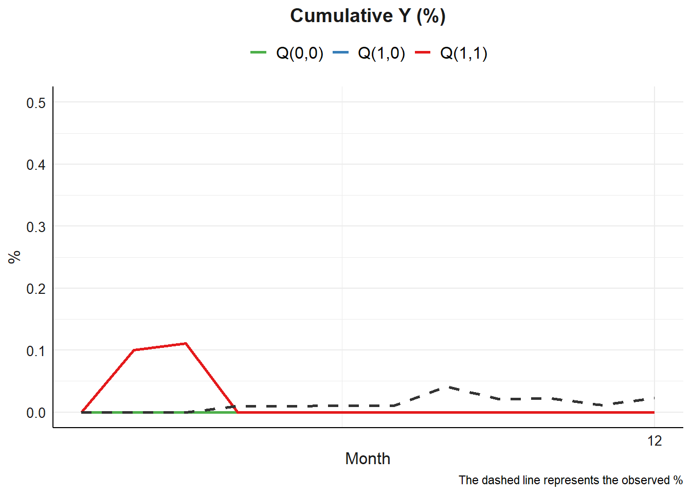

Code
library(tidyverse)
library(magrittr)
library(testthat)
library(splines)
library(data.table)
library(compiler)library(tidyverse)
library(magrittr)
library(testthat)
library(splines)
library(data.table)
library(compiler)dat0 <- readRDS("../Data/tvmed_dat100_12mo.RDS")
dat0 |> as.data.frame() |> as_tibble()# A tibble: 1,147 × 13
id mm Ap Mp L1 L2 L3 Yp age sex ow risk
<int> <dbl> <dbl> <dbl> <dbl> <dbl> <dbl> <dbl> <dbl> <int> <int> <int>
1 1 1 0 0 0 100 80 0 10.9 1 1 0
2 1 2 0 0 0 131. 88.1 0 10.9 1 1 0
3 1 3 0 0 0 125. 97.6 0 10.9 1 1 0
4 1 4 0 0 0 135. 112. 0 10.9 1 1 0
5 1 5 0 0 0 124. 108. 0 10.9 1 1 0
6 1 6 0 0 0 141. 123. 0 10.9 1 1 0
7 1 7 0 0 0 119. 128. 0 10.9 1 1 0
8 1 8 0 0 0 141. 114. 0 10.9 1 1 0
9 1 9 0 0 0 155. 127. 0 10.9 1 1 0
10 1 10 0 0 0 135. 102. 0 10.9 1 1 0
# ℹ 1,137 more rows
# ℹ 1 more variable: lastid <dbl>process_data <- function(basec,expo,med,tvar,lag,outc,time,
norev = NULL,tvar_to_med = FALSE,
cont_exp = FALSE,cont_exp_std = F,
sp_list = NULL,
sp_type = NULL,
sp_df= NULL, data){
## detect which variables are non-reversible
if(length(which(expo %in% norev)) != 0){
norev_expo <- paste0("A",which(expo %in% norev))
} else{
norev_expo <- NULL
}
if(length(which(med %in% norev)) != 0){
norev_med <- paste0("M",which(med %in% norev))
} else {
norev_med <- NULL
}
if(length(which(tvar %in% norev)) != 0){
norev_tvar <- paste0("L",which(tvar %in% norev))
} else {
norev_tvar <- NULL
}
norev_var <- c(norev_expo,norev_med,norev_tvar)
sp_var <- NULL
## detect which variables in splines list
### time-fixed var
if(length(which(sp_list %in% basec)) != 0){
sp_fix <- paste0("v",which(basec %in% sp_list))
} else{
sp_fix <- NULL
}
sp_var[which(sp_list %in% basec)] <- sp_fix
## exposure var
if(length(which(sp_list %in% expo)) != 0){
sp_expo <- paste0("A",which(expo %in% sp_list))
} else{
sp_expo <- NULL
}
sp_var[which(sp_list %in% expo)] <- sp_expo
## mediator var
if(length(which(sp_list %in% med)) != 0){
sp_med <- paste0("M",which(med %in% sp_list))
} else {
sp_med <- NULL
}
sp_var[which(sp_list %in% med)] <- sp_med
## time-varying var
if(length(which(sp_list %in% tvar)) != 0){
sp_tvar <- paste0("L",which(tvar %in% sp_list))
} else {
sp_tvar <- NULL
}
sp_var[which(sp_list %in% tvar)] <- sp_tvar
## time var
if(length(which(sp_list %in% time)) != 0){
sp_time <- paste0("j")
} else{
sp_time <- NULL
}
sp_var[which(sp_list %in% time)] <- sp_time
## continous exposure
if(cont_exp == F & cont_exp_std == T){
stop("standardize only applicable when continuous exposure was TRUE, default is FALSE")
} else if (cont_exp == F & cont_exp_std == F){
## binary exposure
expo_mean <- 0
} else if (cont_exp == T & cont_exp_std == F){
## continuous exposure without standardize
expo_mean <- mean(data[,expo])
} else if (cont_exp == T & cont_exp_std == T){
## continuous exposure with standardize
expo_mean <- 0
data[,expo] <- as.numeric(scale(data[,expo]))
}
## column names of time-fixed variables
name_v <- paste0("v",1:length(basec))
out <- data.frame(id = data$id) |>
mutate(data[,basec]) |>
magrittr::set_colnames(c("id",name_v))
## column names of exposure variables
name_e <- paste0("A",1:length(expo))
## column names of mediator variables
name_me <- paste0("M",1:length(med))
## column names of time-varying variables
name_tvar <- paste0("L",1:length(tvar))
for (i in 1:lag){
## column name of lag effect on exposure variable
co_ex <- paste0(name_e,"l",i)
co_me <- paste0(name_me,"l",i)
co_tvar <- paste0(name_tvar,"l",i)
for (k in 1:length(name_e)){
out[,name_e[k]] <- data[,expo[k]]
name_ep <- {{co_ex}}[k]
out <- out |>
group_by(id) |>
mutate(
{{name_ep}} := lag(!!sym(name_e[k]),n=i,default = data[1,expo[k]])
)
}
for (k in 1:length(name_me)){
out[,name_me[k]] <- data[,med[k]]
name_med <- {{co_me}}[k]
out <- out |>
group_by(id) |>
mutate(
{{name_med}} := lag(!!sym(name_me[k]),n=i,default = data[1,med[k]])
)
}
for (k in 1:length(name_tvar)){
out[,name_tvar[k]] <- data[,tvar[k]]
name_tv <- {{co_tvar}}[k]
out <- out |>
group_by(id) |>
mutate(
{{name_tv}} := lag(!!sym(name_tvar[k]),n=i,default = data[1,tvar[k]])
)
}
}
## outcome variable
out$Y <- data[,outc]
## time variable
out$j <- data[,time]
kq <- list()
kq$df <- out |> data.frame()
kq$norev_var <- norev_var
kq$am <- expo_mean
## column name
eps <- kq$df |> select(starts_with("A")) |> colnames()
tf <- kq$df |> select(starts_with("v")) |> colnames()
tva <- kq$df |> select(starts_with("L")) |> colnames()
mediator <- kq$df |> select(starts_with("M")) |> colnames()
outcome <- kq$df |> select(starts_with("Y")) |> colnames()
timee <- kq$df |> select(starts_with("j")) |> colnames()
### exposure variable
if (any(eps %in% sp_var)){
ep_sp <- sp_type[which(sp_var %in% eps)]
ep_df <- sp_df[which(sp_var %in% eps)]
eps <- paste0("splines::",ep_sp,"(",eps,",df=",ep_df,")")
}
### time-fixed variables
if (any(tf %in% sp_var)){
tf_sp <- sp_type[which(sp_var %in% tf)]
tf_df <- sp_df[which(sp_var %in% tf)]
tf_v <- keep(tf, ~ any(str_starts(.x, sp_var)))
tf <- paste0("splines::",tf_sp,"(",tf_v,",df=",tf_df,")")
}
### mediator variables
if (any(mediator %in% sp_var)){
mediator_sp <- sp_type[which(sp_var %in% mediator)]
mediator_df <- sp_df[which(sp_var %in% mediator)]
mediator_v <- keep(tva, ~ any(str_starts(.x, sp_var)))
mediator <- paste0("splines::",mediator_sp,"(",mediator_v,",df=",mediator_df,")")
}
### time-varying variables
if (any(tva %in% sp_var)){
tva_sp <- sp_type[which(sp_var %in% tva)]
tva_df <- sp_df[which(sp_var %in% tva)]
tva_v <- keep(tva, ~ any(str_starts(.x, sp_var)))
tva <- paste0("splines::",tva_sp,"(",tva_v,",df=",tva_df,")")
}
### time variables
if (any(timee %in% sp_var)){
timee_sp <- sp_type[which(sp_var %in% timee)]
timee_df <- sp_df[which(sp_var %in% timee)]
timee <- paste0("splines::",timee_sp,"(j,df=",timee_df,")")
} else {
timee <- paste0("j")
}
## formula for M(t)
l_tm1 <- tva[!tva %in% name_tvar]
m_tm1 <- mediator[!mediator %in% name_me]
if (tvar_to_med == FALSE){
formula_mt <- list()
for (i in 1:length(med)){
formula_mt[i] <- paste(name_me[i],"~",paste(c(eps,m_tm1,l_tm1,tf,timee),collapse = " + "))
}
kq$fm <- formula_mt
## formula for L(t)
formular_lt <- list()
for (i in 1:length(tvar)){
formular_lt[i] <- paste(name_tvar[i],"~",paste(c(eps,mediator,l_tm1,tf,timee),collapse = " + "))
}
kq$fl <- formular_lt
## formula for Y(t)
formular_y <- paste(outcome,"~",paste(c(eps,mediator,tva,tf,timee),collapse = " + "))
kq$fy <- formular_y
} else {
formula_mt <- list()
for (i in 1:length(med)){
formula_mt[i] <- paste(name_me[i],"~",paste(c(eps,m_tm1,name_tvar,l_tm1,tf,timee),collapse = " + "))
}
kq$fm <- formula_mt
## formula for L(t)
formular_lt <- list()
for (i in 1:length(tvar)){
formular_lt[i] <- paste(name_tvar[i],"~",paste(c(eps,m_tm1,l_tm1,tf,timee),collapse = " + "))
}
kq$fl <- formular_lt
## formula for Y(t)
formular_y <- paste(outcome,"~",paste(c(eps,tva,mediator,tf,timee),collapse = " + "))
kq$fy <- formular_y
}
return(kq)
}
process_data <- cmpfun(process_data)resamp <- function(data,boot = FALSE){
df <- as.data.table(data)
# set.seed(seed)
# cat("Running SEED", seed, "\n")
# cat("\n")
# cat("Resampling Data", "\n")
clusters <- unique(df$id)
samples <- sample(clusters, length(clusters), replace = TRUE)
bb <- table(samples)
#— bootstrap
if (boot == F) {
# no bootstrap
boot_df <- copy(df)
} else {
maxbb <- max(bb)
out_list <- vector("list", maxbb)
for (zzz in seq_len(maxbb)) {
# IDs drawn at least zzz times
ids_zzz <- names(bb)[bb >= zzz]
cc <- df[id %in% ids_zzz]
cc[, bid := paste0(id, zzz)]
out_list[[zzz]] <- cc
}
# one single bind of all “layers”
boot_df <- rbindlist(out_list, use.names = TRUE)
}
boot_df
}
resamp <- cmpfun(resamp)fitg <- function(data,boot = FALSE,
mreg = "binomial",
lreg = c("binomial","gaussian","gaussian"),
yreg = "binomial"){
res_df <- resamp(data = data$df,boot = boot)
fitR <- list()
fitR$df <- res_df |> as_tibble()
#----- fit parametric models for
#--- Mediator models
if(length(mreg) != length(data$fm)){
stop("the defined regression of M is not equal")
}
for (i in 1:length(data$fm)){
fitM <- paste0(data$fm[[i]])
fitR$M[[i]] <- glm(fitM ,family = mreg[i], data = fitR$df)
}
#--- Covariate models
if(length(lreg) != length(data$fl)){
stop("the defined regression of L is not equal")
}
for (i in 1:length(data$fl)){
fitL <- paste0(data$fl[[i]])
fitR$L[[i]] <- glm(fitL ,family = lreg[i], data = fitR$df)
}
#--- Outcome model:
fitY <- paste0(data$fy)
fitR$Y <- glm(fitY ,family = yreg, data = fitR$df)
fitR$norev_var <- data$norev_var
fitR$am <- data$am
fitR
}
fitg <- cmpfun(fitg)baseline_mc <- function(data = fitR2,montecarlo = 10000){
boot <- as.data.table(data$df)
df0 <- boot[j == 1]
df0[, idn := .I]
samples <- sample(df0$idn, size = montecarlo, replace = TRUE)
bb <- table(samples)
MC_list <- lapply(as.integer(names(bb)), function(idn_val) {
reps <- bb[as.character(idn_val)]
dt <- df0[idn == idn_val]
dt_rep <- dt[rep(1, reps), ]
dt_rep[, rep := seq_len(reps)]
dt_rep
})
MC <- rbindlist(MC_list, idcol = "idsim")
MC[, idsim := seq_len(.N)]
data$res_df <- split(MC, by = "idsim", keep.by = TRUE)
data
}
baseline_mc <- cmpfun(baseline_mc)rFunc <- function(mod, ndat) {
pred_prob <- predict(mod, newdata = ndat, type = "response")
return(rbinom(1, size = 1, prob = pred_prob))
}
rFunc <- cmpfun(rFunc)ExtResult2 <- function(data,am) {
Q11 <- data |> filter(lastid == 1 & Ay ==am+1 & Am ==am+1)
Q10 <- data |> filter(lastid == 1 & Ay ==am+1 & Am ==am)
Q00 <- data |> filter(lastid == 1 & Ay ==am & Am ==am)
qq <- data.frame(mQ11 = mean(Q11$Yp2),
mQ10 = mean(Q10$Yp2),
mQ00 = mean(Q00$Yp2))
qq
}
ExtResult2 <- cmpfun(ExtResult2)
cal_ci <- function(data,ci = 0.95,boot = T){
if (boot == F){
resu <- NULL
} else {
qnt <- quantile(data, na.rm = TRUE, probs = c((1-ci)/2,1 - (1-ci)/2))
resu <- paste0("(",round(qnt[1],3),",",round(qnt[2],3),")")
}
resu
}
cal_ci <- cmpfun(cal_ci)tvmedg <- function(data,basec,expo,med,tvar,outc,time,lag = 2,
norev = NULL, cont_exp = NULL,cont_exp_std = F,
tvar_to_med = F,
mreg = "binomial",
lreg = c("binomial","gaussian","gaussian"),
yreg = "binomial",
sp_list = NULL,sp_type = NULL,sp_df= NULL,
followup = 12,
seed = 0,montecarlo = 10,boot = FALSE,nboot = 1,ci = .95,
parallel=TRUE){
set.seed(seed)
start_time <- Sys.time()
qqq <- matrix(ncol = 3) |> data.frame()
colnames(qqq) <- c("mQ11","mQ10","mQ00")
qqq_ci <- matrix(ncol = 3) |> data.frame()
colnames(qqq_ci) <- c("mQ11","mQ10","mQ00")
## point estimate
fitR2 <- process_data(
basec = basec,
expo = expo,
med = med,
tvar = tvar,
outc = outc,
lag = lag,
time = time,
norev = norev,
tvar_to_med = tvar_to_med,
cont_exp = cont_exp,
cont_exp_std = cont_exp_std,
sp_list = sp_list,
sp_type = sp_type,
sp_df = sp_df,
data = data
) |>
fitg(boot=boot,
mreg = mreg,
lreg = lreg,
yreg = yreg) |>
baseline_mc(montecarlo = montecarlo)
am <- fitR2$am
if (parallel == TRUE){
resultDatM <- foreach(
data = fitR2$res_df,
.combine = rbind,
.packages = c("splines", "data.table", "tidyverse"),
.export = c("g_form","rFunc")
) %dopar% {
rbind(
g_form(data, model = fitR2, followup = 12, ay = am+1, am = am+1),
g_form(data, model = fitR2, followup = 12, ay = am+1, am = am),
g_form(data, model = fitR2, followup = 12, ay = am, am = am)
)
}
} else {
resultDatM <- data.frame()
for (iii in 1:montecarlo){
outdat11 <- g_form(data=fitR2$res_df, model = fitR2,followup = followup, ay = am+1, am = am+1)
outdat10 <- g_form(data=fitR2$res_df, model = fitR2,followup = followup, ay = am+1, am = am)
outdat00 <- g_form(data=fitR2$res_df, model = fitR2,followup = followup, ay = am, am = am)
resultDatM2 <- rbind(outdat11, outdat10, outdat00)
resultDatM <- rbind(resultDatM,resultDatM2)
}
}
qqq <- ExtResult2(resultDatM,am = am) |> mutate(
rIE_b = mQ11 - mQ10,
rDE_b = mQ10 - mQ00,
rTE_b = mQ11 - mQ00,
rPE_b = rIE_b/ rTE_b
)
if (boot == TRUE){
for (it in 1:nboot){
## boostrap
fitR2a <- process_data(
basec = basec,
expo = expo,
med = med,
tvar = tvar,
outc = outc,
lag = lag,
time = time,
norev = norev,
tvar_to_med = tvar_to_med,
cont_exp = cont_exp,
cont_exp_std = cont_exp_std,
sp_list = sp_list,
sp_type = sp_type,
sp_df = sp_df,
data = data) |>
fitg(boot=boot,
mreg = mreg,
lreg = lreg,
yreg = yreg) |>
baseline_mc(montecarlo = montecarlo)
am_ci <- fitR2a$am
## extract mean of q11,q10,q00 of the ith iter
if (parallel == TRUE){
resultDatM_ci <- foreach(
data = fitR2$res_df,
.combine = rbind,
.packages = c("splines", "data.table", "tidyverse"),
.export = c("g_form","rFunc")
) %dopar% {
rbind(
g_form(data, model = fitR2, followup = 12, ay = am+1, am = am+1),
g_form(data, model = fitR2, followup = 12, ay = am+1, am = am),
g_form(data, model = fitR2, followup = 12, ay = am, am = am)
)
}
} else {
resultDatM <- data.frame()
for (iii in 1:montecarlo){
outdat11 <- g_form(data=fitR2$res_df, model = fitR2,followup = followup, ay = am+1, am = am+1)
outdat10 <- g_form(data=fitR2$res_df, model = fitR2,followup = followup, ay = am+1, am = am)
outdat00 <- g_form(data=fitR2$res_df, model = fitR2,followup = followup, ay = am, am = am)
resultDatM2_ci <- rbind(outdat11, outdat10, outdat00)
resultDatM_ci <- rbind(resultDatM_ci,resultDatM2_ci)
}
}
qqq_ci[it,] <- ExtResult2(resultDatM_ci,am = am_ci)
}
qqq_ci <- qqq_ci |> mutate(
rIE_b = mQ11 - mQ10,
rDE_b = mQ10 - mQ00,
rTE_b = mQ11 - mQ00,
rPE_b = rIE_b/ rTE_b
)
}
end_time <- Sys.time()
elapsed_time <- end_time - start_time
obj <- list()
obj$ori_df <- fitR2$df
obj$dat_MC <- resultDatM
class(obj) <- "tvmedg"
## print result
cat("Q(a,a):", round(qqq$mQ11, 3),cal_ci(qqq_ci$mQ11,ci,boot = boot),'\n')
cat("Q(a,a*):", round(qqq$mQ10, 3),cal_ci(qqq_ci$mQ10,ci,boot = boot),'\n')
cat("Q(a*,a*):", round(qqq$mQ00, 3),cal_ci(qqq_ci$mQ00,ci,boot = boot),'\n')
cat("Indirect:", round(qqq$rIE_b, 3),cal_ci(qqq_ci$rIE_b,ci,boot = boot),'\n')
cat("Direct:", round(qqq$rDE_b, 3),cal_ci(qqq_ci$rDE_b,ci,boot = boot),'\n')
cat("Total:", round(qqq$rTE_b, 3),cal_ci(qqq_ci$rTE_b,ci,boot = boot),'\n')
cat("Proportional explain:",
round(qqq$rPE_b, 3),cal_ci(qqq_ci$rPE_b,ci,boot = boot),'\n')
cat("Total time elapsed:",elapsed_time,attr(elapsed_time,"units"),'\n')
invisible(obj)
}
tvmedg <- cmpfun(tvmedg)g_form <- function(data = fitR2$res_df, model = fitR2, followup = 12, am = 1, ay = 0){
norev_var <- model$norev_var
dddd <- data |> as.data.frame()
id <- dddd$idsim[1]
id_ori <- dddd$id[1]
lagg <- dddd |> dplyr::select(contains("L1l")) |> ncol()
# followup <- followup
# Baseline covariates
Vp <- dddd |> select(starts_with("v"))
Yp2 <- mm <- numeric()
mm[1:lagg-1] <- j <- 1
Yp2[1:lagg-1] <- 0
# mediator
Mp <- matrix(ncol = length(model$M)) |> data.frame()
names(Mp) <- paste0("M",1:length(model$M))
Mp[1:lagg-1,] <- dddd |> select(names(Mp))
# time-varying covariates (contribute to mediator models)
Lmp <- matrix(ncol = length(model$L)) |> data.frame()
names(Lmp) <- paste0("L",1:length(model$L))
Lmp[1:lagg-1,] <- dddd |> select(names(Lmp))
# time-varying covariates (contribute to outcome models)
Lp <- Lmp
for (l in lagg:followup) {
if (Yp2[l-1]==1) {
break
} else{
# Predict mediator
var_fm <- attr(model$M[[1]]$terms, "term.labels")
var_fm <- gsub(".*\\(([^,]+),.*", "\\1", var_fm)
var_fm <- var_fm[-length(var_fm)]
dfMp <- dddd |> select(matches(var_fm)) |>
mutate(j = l)
dfMp[startsWith(colnames(dfMp), "A")] <- am
if (l > lagg){
for (zz in 1:(lagg)){
term <- paste0("l",zz)
# L lag
dfMp[startsWith(colnames(dfMp), "L") & endsWith(colnames(dfMp), term)] <- Lmp[l-zz,]
# M lag
dfMp[startsWith(colnames(dfMp), "M") & endsWith(colnames(dfMp), term)] <- Mp[l-zz,]
}
}
for (x in 1:length(model$M)){
M_reg <- model$M[[x]]$family$family
if (names(Mp[x]) %in% norev_var){
if (M_reg == "binomial" & Mp[l-1,x] == 1) {
Mp[l,x] <- 1
} else {
Mp[l,x] <- case_when(
M_reg == "binomial" ~ rFunc(model$M[[x]], dfMp),
M_reg == "gaussian" ~ predict(model$M[[x]], dfMp)
)
}
} else {
Mp[l,x] <- case_when(
M_reg == "binomial" ~ rFunc(model$M[[x]], dfMp),
M_reg == "gaussian" ~ predict(model$M[[x]], dfMp)
)
}
}
# Predict time-varying covariates (contribute to mediator models)
# L
var_fl <- attr(model$L[[1]]$terms, "term.labels")
var_fl <- gsub(".*\\(([^,]+),.*", "\\1", var_fl)
var_fl <- var_fl[-length(var_fl)]
dfLmp <- dddd |> select(matches(var_fl)) |>
mutate(j = l)
dfLmp[startsWith(colnames(dfLmp), "A")] <- am
dfLmp[colnames(dfLmp) == colnames(Mp)] <- Mp[l,]
if (l > lagg){
for (zz in 1:lagg){
term <- paste0("l",zz)
# L lag
dfLmp[startsWith(colnames(dfLmp), "L") & endsWith(colnames(dfLmp), term)] <- Lmp[l-zz,]
# M lag
dfLmp[startsWith(colnames(dfLmp), "M") & endsWith(colnames(dfLmp), term)] <- Mp[l-zz,]
}
}
for (x in 1:length(model$L)){
L_reg <- model$L[[x]]$family$family
if (names(Lmp[x]) %in% norev_var){
if (L_reg == "binomial" & Lmp[l-1,x] == 1){
Lmp[l,x] <- 1
} else {
Lmp[l,x] <- case_when(
L_reg == "binomial" ~ rFunc(model$L[[x]], dfLmp),
L_reg == "gaussian" ~ predict(model$L[[x]], dfLmp)
)
}
} else{
Lmp[l,x] <- case_when(
L_reg == "binomial" ~ rFunc(model$L[[x]], dfLmp),
L_reg == "gaussian" ~ predict(model$L[[x]], dfLmp)
)
}
}
# Predict time-varying covariates (contribute to outcome models, if ay != am)
if (ay != am) {
dfLp <- dddd |> select(matches(var_fl)) |>
mutate(j = l)
dfLp[startsWith(colnames(dfLp), "A")] <- ay
dfLp[colnames(dfLp) == colnames(Mp)] <- Mp[l,]
if (l > lagg){
for (zz in 1:lagg){
term <- paste0("l",zz)
# L lag
dfLp[startsWith(colnames(dfLp), "L") & endsWith(colnames(dfLp), term)] <- Lp[l-zz,]
# M lag
dfLp[startsWith(colnames(dfLp), "M") & endsWith(colnames(dfLp), term)] <- Mp[l-zz,]
}
}
for (x in 1:length(model$L)){
L_reg <- model$L[[x]]$family$family
if (names(Lp[x]) %in% norev_var){
if (L_reg == "binomial" & Lp[l-1,x] == 1){
Lp[l,x] <- 1
} else {
Lp[l,x] <- case_when(
L_reg == "binomial" ~ rFunc(model$L[[x]], dfLp),
L_reg == "gaussian" ~ predict(model$L[[x]], dfLp)
)
}
} else {
Lp[l,x] <- case_when(
L_reg == "binomial" ~ rFunc(model$L[[x]], dfLp),
L_reg == "gaussian" ~ predict(model$L[[x]], dfLp)
)
}
}
} else{
Lp <- Lmp
}
# Y
var_y <- attr(model$Y$terms, "term.labels")
var_y <- gsub(".*\\(([^,]+),.*", "\\1", var_y)
var_y <- var_y[-length(var_y)]
dfYp <- dddd |> select(matches(var_y)) |>
mutate(j = l)
dfYp[startsWith(colnames(dfYp), "A")] <- ay
dfYp[colnames(dfYp) %in% colnames(Mp)] <- Mp[l,]
dfYp[colnames(dfYp) %in% colnames(Lp)] <- Lp[l,]
if (l > lagg){
for (zz in 1:lagg){
term <- paste0("l",zz)
# L lag
dfYp[startsWith(colnames(dfYp), "L") & endsWith(colnames(dfYp), term)] <- Lp[l-zz,]
# M lag
dfYp[startsWith(colnames(dfYp), "M") & endsWith(colnames(dfYp), term)] <- Mp[l-zz,]
}
}
Yp2[l] <- rFunc(model$Y, dfYp)
}
mm[l] <- l
}
colnames(Lmp) <- paste0("Lmp",1:length(model$L))
colnames(Lp) <- paste0("Lp",1:length(model$L))
# boot_num <- seed
gdat2 <- data.frame(id, id_ori, mm, Ay = ay, Am = am, Mp, Yp2,
Lmp, Lp, Vp)
gdat2$lastid <- as.numeric(!duplicated(gdat2$id, fromLast = T))
return(gdat2)
}
g_form <- cmpfun(g_form)mytheme <- function(...) {
theme_minimal() +
theme(
plot.title = element_text(size = 14,color = "grey10", face = "bold", hjust = 0.5),
axis.line = element_line(linetype = "solid"),
axis.text = element_text(color = "gray10", size = 10),
axis.title = element_text(color = "gray10", size = 12),
# plot.background = element_blank(),
panel.background = element_rect(fill = "white", color = NA),
legend.title = element_text(size = 12, face = "bold"),
legend.direction = "horizontal",
legend.position = "top",
legend.background = element_rect(fill = NA, color = NA),
legend.text = element_text(size = 12),
legend.key.width = unit(1, "line"),
strip.text = element_text(size = 12, face = "bold"),
strip.background = element_rect(fill = NA, color = NA)
)
}
mytheme <- cmpfun(mytheme)plot.tvmedg <- function(x,what = c("all","cumY","tvY"),...){
tv_cumsum <- x$ori_df |>
group_by(j) |>
summarise(
y_prop = mean(Y),
y_count = sum(Y)
) |>
ungroup() |>
mutate(y_prob_cum = cumsum(y_count)/nrow(x$ori_df))
dat1M <- x$dat_MC |>
mutate(group = if_else(Ay == 1 & Am == 1, "Q(1,1)",
if_else(Ay == 1 & Am ==0, "Q(1,0)", "Q(0,0)")),
group = factor(group, labels = c("Q(0,0)", "Q(1,0)", "Q(1,1)")),
groupM = factor(Am, label = c("No", "Yes"))) |>
group_by(group, mm) |>
summarise(Y = mean(Yp2)) |>
ungroup() |>
group_by(group) |>
mutate(Ysum = cumsum(Y))|>
ungroup()
## cumY
cumy_dfplot <- dat1M |>
left_join(tv_cumsum, by = join_by(mm == j))
f_cumY <- cumy_dfplot |>
ggplot() +
geom_line(aes(x = mm, y = Ysum, color = group), linewidth = 1) +
geom_line(aes(x = mm, y = y_prob_cum), color = "gray20",
linewidth = 1, linetype = 2) +
scale_color_brewer(palette = "Set1", direction = -1) +
# scale_y_continuous(limits = c(0, round(y_limt+0.4,1))) +
# scale_x_continuous(breaks = seq(0, max(dat1M$mm), by = 12)) +
# mytheme() +
labs(x = "Month",
y = "%",
title = "Cumulative Y (%)",
caption = "The dashed line represents the observed %",
color = NULL)
## tvY
tvy_dfplot <- dat1M |>
left_join(tv_cumsum, by = join_by(mm == j))
y_limt2 <- max(tvy_dfplot$Y,tvy_dfplot$y_prop,na.rm=TRUE)
f_tvY <- tvy_dfplot |>
ggplot() +
geom_line(aes(x = mm, y = Y, color = group), linewidth = 1) +
geom_line(aes(x = mm, y = y_prop), color = "gray20",
linewidth = 1, linetype = 2) +
scale_color_brewer(palette = "Set1", direction = -1) +
# scale_y_continuous(limits = c(0, round(y_limt2+0.02,1))) +
# scale_x_continuous(breaks = seq(0, max(dat1M$mm), by = 12)) +
labs(x = "Month",
y = "%",
title = "Cumulative Y (%)",
caption = "The dashed line represents the observed %",
color = NULL)
if (what == "cumY") {
out_plot <- f_cumY
} else {
out_plot <- f_tvY
}
out_plot
}
plot.tvmedg <- cmpfun(plot.tvmedg)df_prep <- function(data) {
data.frame(
id = data$id,
v1 = data$age,
v2 = data$sex,
v3 = data$ow,
v4 = data$risk,
A = data$Ap,
Al1 = data$A_lag1,
Al2 = data$A_lag2,
T1 = data$L1,
T1l1 = data$L1_lag1,
T1l2 = data$L1_lag2,
T2 = data$L2,
T2l1 = data$L2_lag1,
T2l2 = data$L2_lag2,
T3 = data$L3,
T3l1 = data$L3_lag1,
T3l2 = data$L3_lag2,
M1 = data$Mp,
M1l1 = data$M_lag1,
M1l2 = data$M_lag2,
Y = data$Yp,
j = data$mm
)
}gform_single <- function(subdat = MC_list2, length, fitR, ay, am) {
rFunc <- function(mod, ndat) {
pred_prob <- predict(mod, newdata = ndat, type = "response")
return(rbinom(1, size = 1, prob = pred_prob))
}
id <- subdat$idsim[1]
id_ori <- subdat$id[1]
mm <- seq_len(length)
Yp <- numeric(length)
M1p <- numeric(length)
T1p <- numeric(length)
T2p <- numeric(length)
T3p <- numeric(length)
T1mp <- numeric(length)
T2mp <- numeric(length)
T3mp <- numeric(length)
# Baseline covariates
Vp <- subdat[1, c("v1","v2","v3","v4")]
M1p[1] <- 0
Yp[1] <- 0
# Time-varying covariates contribute to outcome model
T1p[1] <- subdat$T1
T2p[1] <- subdat$T2
T3p[1] <- subdat$T3
# Time-varying covariates contribute to mediator model
T1mp[1] <- subdat$T1
T2mp[1] <- subdat$T2
T3mp[1] <- subdat$T3
for (l in 2:length) {
if (Yp[l-1] == 1) {
# event occurred at time (l-1) → stop here
actual_length <- l - 1
break
}
# compute 1- and 2-step lags
i1 <- max(1, l-1)
i2 <- max(1, l-2)
T1l1 <- T1p[i1]
T2l1 <- T2p[i1]
T3l1 <- T3p[i1]
T1l2 <- T1p[i2]
T2l2 <- T2p[i2]
T3l2 <- T3p[i2]
T1ml1 <- T1mp[i1]
T2ml1 <- T2mp[i1]
T3ml1 <- T3mp[i1]
T1ml2 <- T1mp[i2]
T2ml2 <- T2mp[i2]
T3ml2 <- T3mp[i2]
M1l1 <- M1p[i1]
M1l2 <- M1p[i2]
# Predict mediator
dM1p <- data.frame(Vp, A = am, Al1 = am, Al2 = am, M1l1, M1l2, T1l1 = T1ml1, T1l2 = T1ml2,
T2l1 = T2ml1, T2l2 = T2ml2, T3l1 = T3ml1, T3l2 = T3ml2,
j = l)
M1p[l] <- if (M1p[l-1] == 0) rFunc(fitR[[1]], dM1p) else 1
# (2) covariates for mediator model
dT1mp <- transform(dM1p, M1 = M1p[l])
T1mp[l] <- rFunc(fitR[[3]], dT1mp)
dT2mp <- transform(dT1mp, T1 = T1mp[l])
T2mp[l] <- predict(fitR[[4]], newdata = dT2mp)
dT3mp <- transform(dT2mp, T2 = T2mp[l])
T3mp[l] <- predict(fitR[[5]], newdata = dT3mp)
if (ay != am) {
dT1p <- transform(dM1p, A = ay, Al1 = ay, Al2 = ay, M1 = M1p[l],
T1l1 = T1p[i1],T2l1 = T2p[i1],T3l1 = T3p[i1],
T1l2 = T1p[i2],T2l2 = T2p[i2],T3l2 = T3p[i2])
T1p[l] <- rFunc(fitR[[3]], dT1p)
dT2p <- transform(dT1p, T1 = T1p[l])
T2p[l] <- predict(fitR[[4]], newdata = dT2p)
dT3p <- transform(dT2p, T2 = T2p[l])
T3p[l] <- predict(fitR[[5]], newdata = dT3p)
} else {
T1p[l] <- T1mp[l]
T2p[l] <- T2mp[l]
T3p[l] <- T3mp[l]
}
# Y
dYp <- data.frame(Vp, A = ay, Al1 = ay, Al2 = ay, M1 = M1p[l], M1l1, M1l2,
T1 = T1p[l], T1l1, T1l2,
T2 = T2p[l], T2l1, T2l2,
T3 = T3p[l], T3l1, T3l2,
j = l)
Yp[l] <- rFunc(fitR[[2]], dYp)
}
if (!exists("actual_length")) {
actual_length <- length
}
mm <- mm[1:actual_length]
M1p <- M1p[1:actual_length]
Yp <- Yp[1:actual_length]
T1p <- T1p[1:actual_length]
T2p <- T2p[1:actual_length]
T3p <- T3p[1:actual_length]
T1mp <- T1mp[1:actual_length]
T2mp <- T2mp[1:actual_length]
T3mp <- T3mp[1:actual_length]
gdat <- data.frame(id, id_ori, mm, Ay = ay, Am = am, M1p, Yp,
T1mp, T1p, T2mp, T2p, T3mp, T3p, Vp)
gdat$lastid <- as.numeric(!duplicated(gdat$id, fromLast = T))
return(gdat)
}g_boot <- function(data, length, montecarlo= 100, seed = 123) {
df <- as.data.table(df_prep(data))
set.seed(seed)
# Resampling based on id and store in `boot` dataset
clusters <- unique(df$id)
samples <- sample(clusters, length(clusters), replace = TRUE)
bb <- table(samples)
#— bootstrap
if (seed == 0) {
# no bootstrap
boot <- copy(df)
} else {
maxbb <- max(bb)
out_list <- vector("list", maxbb)
for (zzz in seq_len(maxbb)) {
# IDs drawn at least zzz times
ids_zzz <- names(bb)[bb >= zzz]
cc <- df[id %in% ids_zzz]
cc[, bid := paste0(id, zzz)]
out_list[[zzz]] <- cc
}
# one single bind of all “layers”
boot <- rbindlist(out_list, use.names = TRUE)
}
# Check boot data
cat("Resampled data identical to original for seed =", seed, "?:", identical(boot, df),'\n')
# # Centering and scaling the time-scale variable
# boot$jj <- scale(boot$j)
# mean_j <- attributes(boot$jj)$`scaled:center`
# sd_j <- attributes(boot$jj)$`scaled:scale`
# boot$jj <- as.numeric(boot$jj)
#
#----- fit parametric models for
#--- Mediator models
fitM1 <- glm(M1 ~ A + Al1 + Al2 + M1l1 + M1l2 + T1l1 + T1l2 + T2l1 + T2l2 + T3l1 + T3l2 +
v1 + v2 + v3 + v4 + bs(j, df = 3),
family = binomial, data = boot)
# PseudoR2(fitM1)
#--- Covariate models
fitT1 <- glm(T1 ~ A + Al1 + Al2 + M1 + M1l1 + M1l2 + T1l1 + T1l2 + T2l1 + T2l2 + T3l1 + T3l2 +
v1 + v2 + v3 + v4 + bs(j, df = 3),
family = binomial, data = boot)
# PseudoR2(fitT1)
fitT2 <- lm(T2 ~ A + Al1 + Al2 + M1 + M1l1 + M1l2 + T1 + T1l1 + T1l2 + T2l1 + T2l2 + T3l1 + T3l2 +
v1 + v2 + v3 + v4 + bs(j, df = 3), data = boot)
fitT3 <- lm(T3 ~ A + Al1 + Al2 + M1 + M1l1 + M1l2 + T1 + T1l1 + T1l2 + T2 + T2l1 + T2l2 + T3l1 + T3l2 +
v1 + v2 + v3 + v4 + bs(j, df = 3), data = boot)
# Outcome model: E(Y|a, m, l, v)
fitY <- glm(Y ~ A + Al1 + Al2 + M1 + M1l1 + M1l2 + T1 + T1l1 + T1l2 + T2 + T2l1 + T2l2 +
T3 + T3l1 + T3l2 + v1 + v2 + v3 + v4 + bs(j, df = 3),
family = binomial, data = boot)
fitR <- list(fitM1, fitY, fitT1, fitT2, fitT3)
# Avoid growing object
df0 <- boot[j == 1]
df0[, idn := .I]
samples <- sample(df0$idn, size = montecarlo, replace = TRUE)
bb <- table(samples)
MC_list <- lapply(as.integer(names(bb)), function(idn_val) {
reps <- bb[as.character(idn_val)]
dt <- df0[idn == idn_val]
dt_rep <- dt[rep(1, reps), ]
dt_rep[, rep := seq_len(reps)]
dt_rep
})
MC <- rbindlist(MC_list, idcol = "idsim")
MC[, idsim := seq_len(.N)]
# split once (Key improvement)
MC_list2 <- split(MC, by = "idsim", keep.by = TRUE)
# Monte Carlo in parallel
result <- foreach(
subdat = MC_list2,
.combine = rbind,
.packages = c("splines", "data.table"),
.export = c("gform_single")
) %dopar% {
rbind(
gform_single(subdat, length, fitR, ay = 1, am = 1),
gform_single(subdat, length, fitR, ay = 1, am = 0),
gform_single(subdat, length, fitR, ay = 0, am = 0)
)
}
}dat <- readRDS("../Data/tvmed_dat100_12mo.RDS")
dat <- dat |>
group_by(id) |>
mutate(
A_lag1 = lag(Ap, n = 1, default = 0),
A_lag2 = lag(Ap, n = 2, default = 0),
M_lag1 = lag(Mp, n = 1, default = 0),
M_lag2 = lag(Mp, n = 2, default = 0),
L1_lag1 = lag(L1, n = 1, default = 0),
L1_lag2 = lag(L1, n = 2, default = 0),
L2_lag1 = lag(L2, n = 1, default = 100),
L2_lag2 = lag(L2, n = 2, default = 100),
L3_lag1 = lag(L3, n = 1, default = 80),
L3_lag2 = lag(L3, n = 2, default = 80)
) |> ungroup()
data = dat
montecarlo= 100
seed = 123
df <- as.data.table(df_prep(data))
set.seed(seed)
# Resampling based on id and store in `boot` dataset
clusters <- unique(df$id)
samples <- sample(clusters, length(clusters), replace = TRUE)
bb <- table(samples)
#— bootstrap
if (seed == 0) {
# no bootstrap
boot <- copy(df)
} else {
maxbb <- max(bb)
out_list <- vector("list", maxbb)
for (zzz in seq_len(maxbb)) {
# IDs drawn at least zzz times
ids_zzz <- names(bb)[bb >= zzz]
cc <- df[id %in% ids_zzz]
cc[, bid := paste0(id, zzz)]
out_list[[zzz]] <- cc
}
# one single bind of all “layers”
boot <- rbindlist(out_list, use.names = TRUE)
}
# Check boot data
# cat("Resampled data identical to original for seed =", seed, "?:", identical(boot, df),'\n')
# # Centering and scaling the time-scale variable
# boot$jj <- scale(boot$j)
# mean_j <- attributes(boot$jj)$`scaled:center`
# sd_j <- attributes(boot$jj)$`scaled:scale`
# boot$jj <- as.numeric(boot$jj)
#
#----- fit parametric models for
#--- Mediator models
fitM1 <- glm(M1 ~ A + Al1 + Al2 + M1l1 + M1l2 + T1l1 + T1l2 + T2l1 + T2l2 + T3l1 + T3l2 +
v1 + v2 + v3 + v4 + bs(j, df = 3),
family = binomial, data = boot)
# PseudoR2(fitM1)
#--- Covariate models
fitT1 <- glm(T1 ~ A + Al1 + Al2 + M1 + M1l1 + M1l2 + T1l1 + T1l2 + T2l1 + T2l2 + T3l1 + T3l2 +
v1 + v2 + v3 + v4 + bs(j, df = 3),
family = binomial, data = boot)
# PseudoR2(fitT1)
fitT2 <- lm(T2 ~ A + Al1 + Al2 + M1 + M1l1 + M1l2 + T1 + T1l1 + T1l2 + T2l1 + T2l2 + T3l1 + T3l2 +
v1 + v2 + v3 + v4 + bs(j, df = 3), data = boot)
fitT3 <- lm(T3 ~ A + Al1 + Al2 + M1 + M1l1 + M1l2 + T1 + T1l1 + T1l2 + T2 + T2l1 + T2l2 + T3l1 + T3l2 +
v1 + v2 + v3 + v4 + bs(j, df = 3), data = boot)
# Outcome model: E(Y|a, m, l, v)
fitY <- glm(Y ~ A + Al1 + Al2 + M1 + M1l1 + M1l2 + T1 + T1l1 + T1l2 + T2 + T2l1 + T2l2 +
T3 + T3l1 + T3l2 + v1 + v2 + v3 + v4 + bs(j, df = 3),
family = binomial, data = boot)
fitR <- list(fitM1, fitY, fitT1, fitT2, fitT3)
# Avoid growing object
df0 <- boot[j == 1]
df0[, idn := .I]
samples <- sample(df0$idn, size = montecarlo, replace = TRUE)
bb <- table(samples)
MC_list <- lapply(as.integer(names(bb)), function(idn_val) {
reps <- bb[as.character(idn_val)]
dt <- df0[idn == idn_val]
dt_rep <- dt[rep(1, reps), ]
dt_rep[, rep := seq_len(reps)]
dt_rep
})
MC <- rbindlist(MC_list, idcol = "idsim")
MC[, idsim := seq_len(.N)]
# split once (Key improvement)
MC_list2 <- split(MC, by = "idsim", keep.by = TRUE)set.seed(123)
fitR2 <- process_data(
basec = c("age","sex","ow","risk"),
expo = c("Ap"),
med = c("Mp"),
tvar = c("L1","L2","L3"),
outc = c("Yp"),
lag = 2,
time = c("mm"),
norev = c("Mp"),
tvar_to_med = F,
cont_exp = F,
cont_exp_std = F,
sp_list = c("mm"),
sp_type = c("bs"),
sp_df= c(3),
data = dat0
) |> fitg(boot=T,
mreg = "binomial",
lreg = c("binomial","gaussian","gaussian"),
yreg = "binomial") |>
baseline_mc(montecarlo = 100)Make sure the input data is the same
### test base_line MC
along_redf <- rbindlist(MC_list2) |> as.data.frame()
test_redf <- rbindlist(fitR2$res_df) |> as.data.frame()
test_that("baseline_mc function", {
# id, v1 - v4
expect_equal(along_redf[,1],test_redf[,1])
expect_equal(along_redf[,2],test_redf[,2])
expect_equal(along_redf[,3],test_redf[,3])
expect_equal(along_redf[,4],test_redf[,4])
expect_equal(along_redf[,5],test_redf[,5])
# exposure variables
expect_equal(along_redf[,c("A")],test_redf[,c("A1")])
expect_equal(along_redf[,c("Al1")],test_redf[,c("A1l1")])
expect_equal(along_redf[,c("Al2")],test_redf[,c("A1l2")])
## time-dependent covariate
expect_equal(along_redf[,c("T1")],test_redf[,c("L1")])
expect_equal(along_redf[,c("T2")],test_redf[,c("L2")])
expect_equal(along_redf[,c("T3")],test_redf[,c("L3")])
## time-dependent covariate + lag
expect_equal(along_redf[,c("T1l1")],test_redf[,c("L1l1")])
expect_equal(along_redf[,c("T2l1")],test_redf[,c("L2l1")])
expect_equal(along_redf[,c("T3l1")],test_redf[,c("L3l1")])
expect_equal(along_redf[,c("T1l2")],test_redf[,c("L1l2")])
expect_equal(along_redf[,c("T2l2")],test_redf[,c("L2l2")])
expect_equal(along_redf[,c("T3l2")],test_redf[,c("L3l2")])
## Mediator
expect_equal(along_redf[,c("M1")],test_redf[,c("M1")])
expect_equal(along_redf[,c("M1l1")],test_redf[,c("M1l1")])
expect_equal(along_redf[,c("M1l2")],test_redf[,c("M1l2")])
## outcome and time
expect_equal(along_redf[,c("Y")],test_redf[,c("Y")])
expect_equal(along_redf[,c("j")],test_redf[,c("j")])
})Test passed 🎊library(foreach)
length =12
result <- foreach(
subdat = MC_list2,
.combine = rbind,
.packages = c("splines", "data.table"),
.export = c("gform_single")
) %dopar% {
rbind(
gform_single(subdat, length, fitR, ay = 1, am = 1),
gform_single(subdat, length, fitR, ay = 1, am = 0),
gform_single(subdat, length, fitR, ay = 0, am = 0)
)
}library(furrr)
am <- fitR2$am
followup <- 12
gform_wrapper2 <- function(data, model) {
outdat11 <- g_form(data=data, model = model,
followup = followup, ay = am+1, am = am+1)
outdat10 <- g_form(data=data, model = model,
followup = followup, ay = am+1, am = am)
outdat00 <- g_form(data=data, model = model,
followup = followup, ay = am, am = am)
bind_rows(outdat11, outdat10, outdat00)
}
resultDatM <- future_map_dfr(fitR2$res_df,
~ gform_wrapper2(data = .,model = fitR2))along_redf <- result |> filter(Am == 1 & Ay == 1 & id_ori == 4)
test_redf <- resultDatM |> filter(Am == 1 & Ay ==1 & id_ori == 4)
test_that("gform function", {
# boot_num - Am
expect_equal(along_redf[,c(1:5)],test_redf[,c(1:5)])
expect_equal(along_redf[,c("v1","v2","v3","v4","lastid")],
test_redf[,c("v1","v2","v3","v4","lastid")])
expect_equal(along_redf[,c("M1p")],test_redf[,c("M1")])
expect_equal(along_redf[,c("T1mp")],test_redf[,c("Lmp1")])
expect_equal(along_redf[,c("T1p")],test_redf[,c("Lp1")])
expect_equal(along_redf[,c("T2mp")],test_redf[,c("Lmp2")])
expect_equal(along_redf[,c("T2p")],test_redf[,c("Lp2")])
expect_equal(along_redf[,c("T3mp")],test_redf[,c("Lmp3")])
expect_equal(along_redf[,c("T3p")], test_redf[,c("Lp3")])
expect_equal(along_redf[,c("Yp")], test_redf[,c("Yp2")])
})Test passed 😀along_redf <- result |> filter(Am == 0 & Ay == 0 & id_ori == 4)
test_redf <- resultDatM |> filter(Am == 0 & Ay ==0 & id_ori == 4)
test_that("gform function", {
# boot_num - Am
expect_equal(along_redf[,c(1:5)],test_redf[,c(1:5)])
expect_equal(along_redf[,c("v1","v2","v3","v4","lastid")],
test_redf[,c("v1","v2","v3","v4","lastid")])
expect_equal(along_redf[,c("M1p")],test_redf[,c("M1")])
expect_equal(along_redf[,c("T1mp")],test_redf[,c("Lmp1")])
expect_equal(along_redf[,c("T1p")],test_redf[,c("Lp1")])
expect_equal(along_redf[,c("T2mp")],test_redf[,c("Lmp2")])
expect_equal(along_redf[,c("T2p")],test_redf[,c("Lp2")])
expect_equal(along_redf[,c("T3mp")],test_redf[,c("Lmp3")])
expect_equal(along_redf[,c("T3p")], test_redf[,c("Lp3")])
expect_equal(along_redf[,c("Yp")], test_redf[,c("Yp2")])
})Test passed 🥳along_redf <- result |> filter(Am == 0 & Ay == 1 & id_ori == 4)
test_redf <- resultDatM |> filter(Am == 0 & Ay ==1 & id_ori == 4)
test_that("gform function", {
# boot_num - Am
expect_equal(along_redf[,c(1:5)],test_redf[,c(1:5)])
expect_equal(along_redf[,c("v1","v2","v3","v4","lastid")],
test_redf[,c("v1","v2","v3","v4","lastid")])
expect_equal(along_redf[,c("M1p")],test_redf[,c("M1")])
expect_equal(along_redf[,c("T1mp")],test_redf[,c("Lmp1")])
expect_equal(along_redf[,c("T1p")],test_redf[,c("Lp1")])
expect_equal(along_redf[,c("T2mp")],test_redf[,c("Lmp2")])
expect_equal(along_redf[,c("T2p")],test_redf[,c("Lp2")])
expect_equal(along_redf[,c("T3mp")],test_redf[,c("Lmp3")])
expect_equal(along_redf[,c("T3p")], test_redf[,c("Lp3")])
expect_equal(along_redf[,c("Yp")], test_redf[,c("Yp2")])
})Test passed 😸library(furrr)
plan(multisession, workers = 4)
gform_wrapper2 <- function(data, model) {
bind_rows(
g_form(data=data, model = model, followup = 12, ay = 1, am = 1),
g_form(data=data, model = model, followup = 12, ay = 1, am = 0),
g_form(data=data, model = model, followup = 12, ay = 0, am = 0)
)
}
bench_futuremap <- function() {
future_map_dfr(fitR2$res_df, ~ gform_wrapper2(.x, model = fitR2))
}
library(doParallel)
cl <- makeCluster(4) # or detectCores()
registerDoParallel(cl)
library(bench)
results <- bench::mark(
foreach = foreach(
data = fitR2$res_df,
.combine = rbind,
.packages = c("splines", "data.table", "tidyverse")
) %dopar% {
rbind(
g_form(data, model = fitR2, followup = 12, am = 1, ay = 1),
g_form(data, model = fitR2, followup = 12, am = 0, ay = 1),
g_form(data, model = fitR2, followup = 12, am = 0, ay = 0)
)
},
futuremap = bench_futuremap(),
iterations = 3,
check = FALSE
)
print(results)# A tibble: 2 × 13
expression min median `itr/sec` mem_alloc `gc/sec` n_itr n_gc total_time
<bch:expr> <bch:tm> <bch:> <dbl> <bch:byt> <dbl> <int> <dbl> <bch:tm>
1 foreach 17.7s 18.2s 0.0553 14MB 0.147 3 8 54.28s
2 futuremap 20.4s 20.7s 0.0479 600MB 1.55 3 97 1.04m
# ℹ 4 more variables: result <list>, memory <list>, time <list>, gc <list>library(furrr)
library(doParallel)
cl <- makeCluster(8)
registerDoParallel(cl)
tvmedg(data = dat0,
basec = c("age","sex","ow","risk"),
expo = c("Ap"),
med = c("Mp"),
tvar = c("L1","L2","L3"),
outc = c("Yp"),
time = c("mm"),
lag = 2,
norev = c("Mp"),
cont_exp = F,
cont_exp_std = F,
tvar_to_med = F,
mreg = "binomial",
lreg = c("binomial","gaussian","gaussian"),
yreg = "binomial",
sp_list = NULL,
sp_type = NULL,
sp_df= NULL,
followup = 12,
seed = 0,
montecarlo = 10,
boot = FALSE,
nboot = NULL,
ci = .95,
parallel=TRUE)Q(a,a): 0.1
Q(a,a*): 0
Q(a*,a*): 0
Indirect: 0.1
Direct: 0
Total: 0.1
Proportional explain: 1
Total time elapsed: 5.540276 secs Gồm: continuous exposure,cont_exp_std,tvar_to_med =T, thêm splines + dof, bootstraping
tvmedg(data = dat0,
basec = c("age","sex","ow","risk"),
expo = c("L2"),
med = c("Mp"),
tvar = c("L1","L3"),
outc = c("Yp"),
time = c("mm"),
lag = 2,
norev = c("Mp"),
cont_exp = T,
cont_exp_std = T,
tvar_to_med = T,
mreg = "binomial",
lreg = c("binomial","gaussian"),
yreg = "binomial",
sp_list = c("age","mm","L1"),
sp_type = c("ns","bs","bs"),
sp_df= c(4,3,3),
followup = 12,
seed = 123,
montecarlo = 10,
boot = T,
nboot = 2,
ci = .95,
parallel=TRUE)Q(a,a): 0.4 (0.205,0.395)
Q(a,a*): 0.6 (0.6,0.6)
Q(a*,a*): 0.7 (0.6,0.6)
Indirect: -0.2 (-0.395,-0.205)
Direct: -0.1 (0,0)
Total: -0.3 (-0.395,-0.205)
Proportional explain: 0.667 (1,1)
Total time elapsed: 6.54567 secs op <- tvmedg(data = dat0,
basec = c("age","sex","ow","risk"),
expo = c("Ap"),
med = c("Mp"),
tvar = c("L1","L2","L3"),
outc = c("Yp"),
time = c("mm"),
lag = 2,
norev = c("Mp"),
cont_exp = F,
cont_exp_std = F,
tvar_to_med = F,
mreg = "binomial",
lreg = c("binomial","gaussian","gaussian"),
yreg = "binomial",
sp_list = c("mm"),
sp_type = c("bs"),
sp_df= c(3),
followup = 12,
seed = 123,
montecarlo = 10,
boot = F,
nboot = 1,
ci = .95,
parallel=TRUE)Q(a,a): 0.2
Q(a,a*): 0.2
Q(a*,a*): 0
Indirect: 0
Direct: 0.2
Total: 0.2
Proportional explain: 0
Total time elapsed: 2.627483 secs plot(op,"cumY")+
scale_y_continuous(limits = c(0, 0.5)) +
scale_x_continuous(breaks = seq(0, 12, by = 12)) +
mytheme()
plot(op,"tvY")+
scale_y_continuous(limits = c(0, 0.5)) +
scale_x_continuous(breaks = seq(0, 12, by = 12)) +
mytheme()